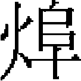

文宗下 寧宗
至順元年春正月丁巳，知樞密院事伯帖木兒出爲遼陽行省左丞相。辛酉，有事於太廟。甲午，燕鐵木兒、伯顔並乞罷退，不允，仍命阿榮、趙世安慰諭之。丁卯，諸王秃堅及萬户伯忽、阿木、怯朝等起兵於雲南，陷中慶路。壬申，衡陽猺寇湘鄉州。癸酉，宣徽使撒敦知樞密院事。丁丑，召荆王也速也不干子脱脱木兒至京師。趙世延乞致仕，不允。衡陽猺寇石康縣。己卯，封太醫院使野里牙爲秦國公。
二月壬午朔，趙世安爲御史中丞，史惟良爲中書左丞。癸未，知樞密院事燕不憐加開府儀同三司。籍故中書平章政事張珪五子資産。己丑，秃堅等陷仁德府。是月，典瑞院使阿魯等使高麗。甲午，秃堅自立爲雲南王。丙申，雲南蒲蠻酋入覲。己亥，中書平章政事朵兒失有罪免。猺賊陷灌陽縣。壬寅，御史大夫玥璐不花乞致仕，不允。甲辰，流王禪子帖木兒不花於吉陽軍。乙巳，封明宗皇子亦璘真班爲鄜王。丙午，中尚卿小云失海涯以兵討雲南。丁未，伯顔知樞密院事，依前太保、録軍國重事。詔曰：「昔在世祖，嘗以宰相一人總領庶務，故治出於一，政有所統。今燕鐵木兒爲右丞相，伯顔既知樞密院事，左丞相其勿復置。」
戊申，太禧宗禋使阿里海牙爲中書平章政事。命中書左丞史惟良、參知政事和尚總督建言之事。是月，典瑞院使阿魯等使高麗，册高麗世子楨爲開府儀同三司、征東行省左丞相、高麗國王。
三月甲寅，乖西蠻入寇。丁巳，徙封濟陽王木楠子爲燕王，吴王潑皮爲濟陽王。戊午，封皇子阿剌忒納答剌爲燕王。廷試進士，賜篤列圖、王文燁等九十七人及第、出身有差。河南行省平章政事乞住爲雲南行省平章政事，八番順元宣慰使帖木兒不花爲雲南行省左丞，從豫王討雲南。癸亥，諸王桑哥班、撒忒迷失、買哥分使燕只吉台、不賽因、月即别三藩。丁卯，命御史大夫鐵木兒補化等振舉臺綱。辛未，封知樞密院事不花帖木兒爲武平郡王。録討秃堅功，雲南宣慰使舉宗、禄余並遥授雲南行省參知政事。壬申，祔明宗皇帝於太廟。甲戌，封諸王速來蠻爲西寧王。乙亥，西番哈剌火州來獻蒲桃酒。丙子，改山東都萬户府爲都督府。雲南木邦酋渾都來獻方物。賜燕鐵木兒定策元勛碑。辛巳，諸王哈兒蠻遣使貢蒲萄酒。
夏四月甲申，有事於太廟。丙戌，封也真也不干爲桓國公。丁酉，遣諸王桑兀孫還雲南。明宗皇后八不沙崩。雲南宣慰使禄余殺烏撒宣慰司官吏，叛附伯忽，羅羅諸蠻俱叛，平章政事帖木兒不花死之。戊申，諸王云都帖木兒將江浙、江西、河南三行省兵，與湖廣行省平章政事脱歡討雲南。
五月乙卯，以受尊號，告祭南郊。戊午，御大明殿，燕鐵木兒率百官及僧道耆民，上尊號曰欽天統聖至德誠功大文孝皇帝。是日，改元至順。詔河南、懷慶、衛輝、晉寧四路曾經賑濟人户［一］，今歲差發全行蠲免。其餘被災路分已經賑濟者，腹裏差發、江淮夏税，俱免三分。庚申，以受尊號，謝太廟。甲子，申命燕鐵木兒爲中書右丞相，詔天下。丁卯，翰林國史院進《英宗實録》。戊辰，車駕幸上都，次大口。阿憐帖木兒爲大司徒。遣豫王阿剌忒納失里鎮西番。趙世延加翰林學士承旨，封魯國公。己巳，車駕次龍虎臺。辛未，置宣忠扈衛親軍都萬户府。太禧宗禋使亦列赤爲中書平章政事。癸酉，遣使勞雲南軍。甲戌，八番乖西蠻作亂。乙亥，置順元宣撫使司，統答剌罕軍討雲南。是月，以浙東宣慰使陳天祐、湖廣行省參知政事樊楫死事，贈天祐推忠秉義全節功臣，江浙行省左丞，迫封河南郡公，楫推忠宣力效節功臣、江浙行省右丞、上黨郡公。
六月丙戌，車駕至上都。丙申，立行樞密院，徹里鐵木兒知行樞密院事，探馬赤同知樞密院事，教化爲樞密副使，率朵甘思、朵思麻及鞏昌兵萬三千人，從鎮西武靖王搠思班、豫王阿剌忒納失里分道討雲南。庚子，内侍撒里爲大司徒。殺知樞密院事闊徹伯、脱脱木兒，通政使只兒哈郎，翰林學士承旨教化的、伯顔也不干，燕王宫相教化的、斡羅思，中政使尚家奴、秃烏台，阿速衛指揮使那海察、拜住，並籍其家。乙巳，羅羅斯蠻酋撒加伯合烏蒙蠻寇建昌縣，雲南行省右丞躍里帖木兒敗之，四川兵又敗撒加伯於蘆古驛。丁未，改東路蒙古軍元帥府爲東路欽察軍萬户府。
秋七月辛亥，封諸王按渾察爲廣寧王。丁巳，諸王不賽因遣使來朝。乙丑，翰林學士承旨也兒吉尼知樞密院事。丁丑，故丞相鐵木迭兒子匠作使鎖住與其弟觀音奴及太醫院使野里牙等，祭北斗咀咒，事覺，俱伏誅，並殺前刑部尚書烏馬兒、前御史大夫孛羅、上都留守馬兒。
閏月庚辰朔，封諸王卯澤爲永寧王。辛卯，陝西行臺御史中丞脱亦納爲中書參知政事，中書平章政事趙世延罷爲翰林學士承旨。癸巳，月魯帖木兒爲大司徒。丁酉，車駕發上都。戊戌，封甘肅行省平章政事乃馬台爲宣寧郡王，駙馬謹只兒爲鄆國公，並知行樞密院事。戊申，加封宣聖父叔梁紇爲啟聖王，母顔氏爲啟聖王夫人，顔子爲兖國復聖公，曾子郕國宗聖公，子思沂國述聖公，孟子鄒國亞聖公，程顥爲豫國公，程頤爲洛國公。羅羅斯酋撒加伯等寇建昌，四川行省以兵討之。廣西猺賊寇修仁、荔浦諸縣，廣西元帥府以兵討之，獲其酋于國安。
八月丁巳，諸王月即别遣使來朝。己未，車駕至自上都。甲子，忠州蠻酋黄祖顯遣其子來獻方物。乙丑，遣使至真定玉華宫，祀睿宗及莊聖皇后。壬申，興舉蒙古字學。
九月庚辰，大寧路地震。罷入粟補官例。甲申，不蘭奚、月魯帖木兒並授大司徒印。遼陽行省平章政事哈剌鐵兒爲御史葛明誠所劾，免官。己丑，嶺北行省平章政事哈八兒秃爲御史朵羅台、王文若所劾，免官。癸巳，封魏王阿木哥子阿魯爲西靖王。甲午，竄湖南行省平章政事速速於雷州。丙子，中書左丞史惟良致仕。丁未，中書參知政事張友諒爲中書左丞。知樞密院事脱别台出爲陝西行臺御史大夫。
冬十月己未，中書右丞相燕鐵木兒等告於太廟，請以太祖皇帝配享南郊。辛酉，帝服大裘衮冕，祀昊天上帝於南郊，以太祖皇帝配享。中書右丞相燕鐵木兒爲亞獻，御史大夫帖木兒補化爲終獻。乙丑，廣西猺賊寇横州及永淳縣。辛未，烏蒙路蠻酋阿朝降。乙亥，撒敦、唐其勢並賜號答剌罕。
十一月戊寅，伯忽及其弟伯察兒等俱伏誅。丙戌，躍里帖木兒敗羅羅斯諸蠻於建昌木托山。辛卯，闊闊台知樞密院事。癸巳，阿秃伏誅。甲午，諸王按灰坐歐傷巡檢，杖謫廣寧。乙未，躍里帖木兒等平雲南。
十二月戊申，以立皇太子，遣知樞密院事伯顔告於郊廟。己酉，以漢儒董仲舒從祀孔子廟。辛亥，立皇子燕王阿剌忒納答剌爲皇太子。戊午，以郊祀禮成，帝御大明殿受百官賀，大赦天下。甲戌，御史中丞和尚坐貪縱，免官禁錮。
二年春正月戊寅，烏撒、烏蒙諸蠻及東川夷獠俱來降。癸未，立侍正府，伯顔、月魯帖木兒等十四人並以本官兼侍正。乙酉，有事於太廟。庚寅，改東路蒙古軍萬户府爲東路蒙古親軍都指揮使司。諸王哈兒蠻遣使貢葡萄酒。辛卯，皇太子阿剌忒納答剌卒。己亥，吏部尚書撒里瓦、禮部郎中趙期頤頒即位詔於安南並賜以新曆。甲辰，建孔子廟於後衛。
二月丙戌［二］，上都留守乃馬台知嶺北行樞密院事，太禧宗禋使謹只兒、答鄰答里、馬列捏並知樞密院事，遥授平章政事。四川懷德府驢谷什用等四洞及生蠻十二洞，俱來降，改懷德府爲宣撫司。湖廣行省參知政事徹里帖木兒及速速、班丹俱坐出言怨望，流徹里帖木兒於廣東，班丹於廣西，速速於海南，並籍其家。壬子，中書平章政事亦列赤兼瀋陽等路安撫使，伯撒里爲中書平章政事，朵兒只班爲中書參知政事。乙卯，雲南叛蠻悉降。壬戌，改封寧王徹徹秃爲郯王。庚午，占城國遣使來貢方物。郯王徹徹秃及諸王沙哥坐妄言不道，安置徹徹秃於廣州，沙哥於雷州。甲戌，荆王也不干遣使貢犁牛。雲南景東蠻酋阿只弄遣其子來獻馴象。
三月戊子，諸王阿魯出鎮陝西。己丑，江浙行省平章政事童童爲御史所劾，免官。庚寅，命威順王寬徹不花仍鎮湖廣。癸巳，雲南賊也不干、羅羅、脱脱木兒等俱伏誅。庚子，立宫相都總管府。
夏四月戊申，以宫中高麗女子不顔帖你賜燕鐵木兒。高麗國王請獻國中田爲資送，遣使往受之。庚戌，建燕鐵木兒生祠於紅橋，並賜功德碑。壬子，燕鐵木兒總制宫相府事，也不倫、伯撒里並以本官兼都達魯花赤。甲寅，改宣忠扈衛親軍都萬户府爲宣忠斡羅斯扈衛親軍都指揮使司。乙卯，有事於太廟。鎮西武靖王搠思班等以雲南平，各遣使來獻捷。庚申，徵河南儒士吴炳爲藝文監典簿，炳不至。壬戌，探馬赤爲雲南行省平章政事，總制境内軍事。
五月己卯，安南世子陳日

遣使來貢方物。己丑，置八百等處宣慰司都元帥府，臨安元江等處宣慰司［三］。癸巳，雲南威楚路蒲蠻猛吾來獻方物，願入銀爲歲賦，詔置散府一、土官三十三，皆賜金銀符。甲午，封宣政使脱力爲薊國公。乙未，陝西行臺御史大夫脱别台知樞密院事。御史大夫玥璐不花罷。奎章閣大學士趙世延等進《皇朝經世大典》。丙申，車駕幸上都。戊戌，次紅橋，祀燕鐵木兒生祠。己亥，也兒吉尼知行樞密院事。八百等處蠻酋來獻方物。癸卯，也兒吉尼加太尉。六月丙寅，雲南烏撒、羅羅斯諸蠻復叛。是月，加封鄆國夫人并官氏爲大成至聖文宣王夫人。
秋七月己卯，曲赦雲南叛蠻禄余等。壬午，監察御史張益等劾四川行省平章政事欽察台反覆不可信任，流欽察台於廣東，同妻孥禁錮，仍詔御史臺凡憸人如欽察台者，其極言之。丁亥，瓊州黎賊作亂。壬辰，知樞密院事脱别台爲御史大夫。戊戌，封伯顔爲浚寧王。庚子，廣西猺賊平。辛丑，懷德府二十一洞蠻來獻方物。
八月甲辰朔，日有食之。封脱憐忽秃魯爲靖恭王，阿藍朵兒只爲懿德王。諸王不賽因遣使來朝。辛亥，車駕至自上都。壬子，諸王答兒麻失理遣孛兒只吉歹等來貢方物。丙辰，封怯列該爲豐國公。己未，諸王不賽因遣使來言其臣怯列木丁矯王命入朝，請執以歸。敕怯列木丁乘馹還。
九月丙子，雲南東川路總管普沂先那具殺宣慰使月魯以叛，西域指揮使鎖住以兵討之。海南賊王周率十九洞黎蠻作亂，湖廣行省左丞移剌四奴以兵討之。庚寅，幸大承天護聖寺。禄余寇順元路。
冬十月己酉，有事於太廟。辛亥，召江南行臺御史大夫阿兒思蘭海涯至京師。癸丑，幸大承天護聖寺。蒙古都元帥怯烈敗阿禾黨於靖江路。乙丑，立昭功萬户都總使府。
十一月壬申朔，日有食之。乙亥，李彦通、蕭不蘭奚等謀反，伏誅。丙子，封諸王斡即爲保寧王。己卯，封蘸班爲豳國公。辛巳，户部尚書耿焕爲中書參知政事。癸未，養燕鐵木兒之子塔剌海爲皇子。荆王也速也不干貢犁牛四百。
十二月壬子，命諸王忽剌出復鎮雲南。戊午，諸王秃列帖木兒來獻馬及蒲萄酒。庚申，遣集賢直學士答失蠻至真定玉華宫祀睿宗及莊聖皇后。
三年春正月辛未朔，高麗國遣使賀正旦兼貢方物。癸酉，前高麗王燾仍爲高麗國王。己卯，有事於太廟。廣西羅偉里蠻合龍州落羽蠻作亂。丁亥，幸大承天護聖寺。戊子，萬安軍黎賊寇陵水縣。庚子，封公主桑哥不剌爲鄆國大長公主。夔州路洞蠻寇施州。
二月辛丑朔，八番蠻酋駱度來獻方物。甲辰，諸王答兒蠻失里、哈兒蠻各遣使貢馬及金鴉鶻、蒲萄酒。乙巳，湖廣行省平章政事玥璐不花爲陝西行臺御史大夫。戊申，禄余合芒部蠻寇羅羅斯及東川、會通等州，己酉，禄余乞降。己巳，詔修曲阜宣聖廟。
三月庚午朔，遣使賜諸王不賽因繡彩幣帛。爪哇國遣使奉表貢方物。丁亥，諸王伯岳兀、完者帖木兒來朝。戊子，占城國遣使奉金字表，貢方物。癸巳，皇子古剌答納更名燕帖古思。丁酉，緬國遣使貢方物。
夏四月壬寅，四川師璧、散毛、盤速出三洞蠻酋來獻方物。戊申，大寧路地震。四川大盤洞蠻來獻方物。丙辰，諸王不别居法郎及不賽因各遣使貢方物。乙丑，安南世子陳日遣使貢方物。安西王月魯帖木兒與國師必剌忒納失里沙津、畏兀僧玉你達八的剌板的謀爲不軌，事覺皆伏誅。
五月戊寅，幸大承天護聖寺。京師地震，有聲。庚寅，車駕幸上都。
六月己亥朔，赦天下。以月魯帖木兒等罪狀詔諭中外。己酉，御史中丞趙世安爲中書左丞。癸亥，知樞密院事也卜倫加開府儀同三司。
秋七月戊辰朔，諸王答里麻失里等遣使獻虎豹。丁丑，移剌四奴以兵討廣東黎賊。壬辰，不賽因遣使貢七寶水晶。甲午，諸王月即别遣使貢方物。宥諸王徹徹秃、沙哥還本部。
八月癸卯，吴王木楠子及諸王答都阿海、鎖南管卜、帖木兒赤、帖木迭兒等來朝。乙巳，天鼓鳴於西北。丙午，祭社稷。丁未，有事於太廟。己酉，帝崩於上都，在位五年，年二十有九。癸丑，葬起輦谷。
元統元年十一月辛亥，上尊諡曰聖明元孝皇帝，廟號文宗，國語曰札牙篤皇帝。
寧宗冲聖嗣孝皇帝，諱懿璘質班，明宗第二子也。母曰皇后乃蠻真氏。天曆二年二月，封鄜王。
至順三年八月，文宗駐蹕上都，疾大漸，召皇后及丞相燕鐵木兒至榻前曰：「旺忽察都之事，爲朕平生大錯，悔之無及。燕帖古思雖朕子，然天下乃明宗之天下也。汝等如愛朕，其召妥懽帖木兒立之。朕見明宗於地下，亦可以自解矣。」言訖而崩。燕鐵木兒不欲立妥懽帖木兒，秘遺詔不發，揚言大行皇帝申固讓夙志，傳位於明宗之子，請以帝入承大統，遣使徵諸王會京師，中書庶務啟皇后取進止。
九月辛巳，京師地震。
冬十月庚子，帝即位於大明殿。詔曰：
洪惟太祖皇帝啟闢疆宇，世祖皇帝統一萬方，列聖相承，法度明著。我曲律皇帝入纂大統，修舉庶政，動合成法，授大寶位於普顔篤皇帝以及格堅皇帝。曆數之歸，實當在我忽都篤皇帝、扎牙篤皇帝，而各播越遼遠。時則有若燕鐵木兒，建義效忠，戡平内難，以定邦國，協恭推戴扎牙篤皇帝。登極之始，即以讓兄之詔明告天下，奉璽紱遠迓忽都篤皇帝。及忽都篤皇帝奄棄臣庶，扎牙篤皇帝復正宸極，仁義之至，視民如傷，恩澤旁被，無間遠邇。顧育眇躬，尤篤慈愛。賓天之日，皇后傳顧命於太師太平王右丞相答剌罕燕鐵木兒、太保浚寧王知樞密院事伯顔等，謂聖體彌留，益推固讓之初志，以宗社之重，屬諸忽都篤皇帝之世嫡。乃遣使召諸正宗親，以十月一日來會於大都，與宗王、大臣同奉遺詔勸進。朕以至順三年十月初四日即皇帝位於大明殿。可大赦天下。大都、上都、興和三路差税免三年。腹裏差發並諸郡不納差發去處税糧，十分爲率，免二分。江淮以南，夏税亦免二分。土木工役，除倉庫必合修理外，毋創造以紓民力。民間應有逋欠差税課程，盡行蠲免。監察御史、肅政廉訪司官並内外三品以上正官，歲舉才堪守令者一人，申省部先行録用，如稱職，舉官優加旌擢。重囚淹禁三年以上，疑不能決者，申省部詳讞釋放。學校農桑、孝義貞節、科舉取士、國學貢試，並依舊制。廣海、雲南梗化之民，詔書到日，限六十日内出官，與免本罪。
辛丑，知樞密院事撒敦爲御史大夫［四］，中書右丞撒迪爲平章政事，宣政使闊里吉思爲中書右丞，中書平章政事秃兒哈鐵木兒知樞密院事。甲寅，不賽因遣使貢塔里牙、佩刀。乙卯，以即位告祀南郊。己未，告祀太廟。庚申，告祀社稷。是月，立皇后弘吉剌氏。
十一月壬申，命郯王徹徹秃鎮遼陽。甲戌，以上皇太后玉册，告祭南郊及太廟。戊寅，尊皇后曰皇太后。己卯，御大明殿受朝賀。壬辰，帝崩，年七歲。甲午，葬起輦谷。
至元三年正月辛亥，上尊諡曰冲聖嗣孝皇帝，廟號寧宗。
史臣曰：燕鐵木兒挾震主之威，顓權用事。文宗垂拱於上，無所可否，日與文學之士從容翰墨而已。昔漢靈帝好詞賦，召樂松等待詔鴻都門，蔡邕露章極諫，斥爲俳優。况區區書畫之玩乎？君子以是知元祚之衰也。《春秋》之義，未踰年之君稱子。寧宗即位匝月而殤，乃入廟稱宗，其廷臣不學如此，豈非失禮之大者哉！
【校勘記】
［一］「晉寧」，原作「普寧」，據中華書局點校本《元史》卷三四本紀第三十四《文宗三》校勘記一〇改。
［二］「二月丙戌」疑誤，中華書局點校本《元史》卷三五本紀第三十五《文宗四》至順二年同條改作「二月丙午朔」。
［三］「臨安」，原作「臨江」，據本書卷四九《地理志四》改。
［四］「撒敦」，原本作「撤敦」，據上文及《元史》卷三七本紀第三十七《寧宗》至順三年十月辛丑條改。
本章完!